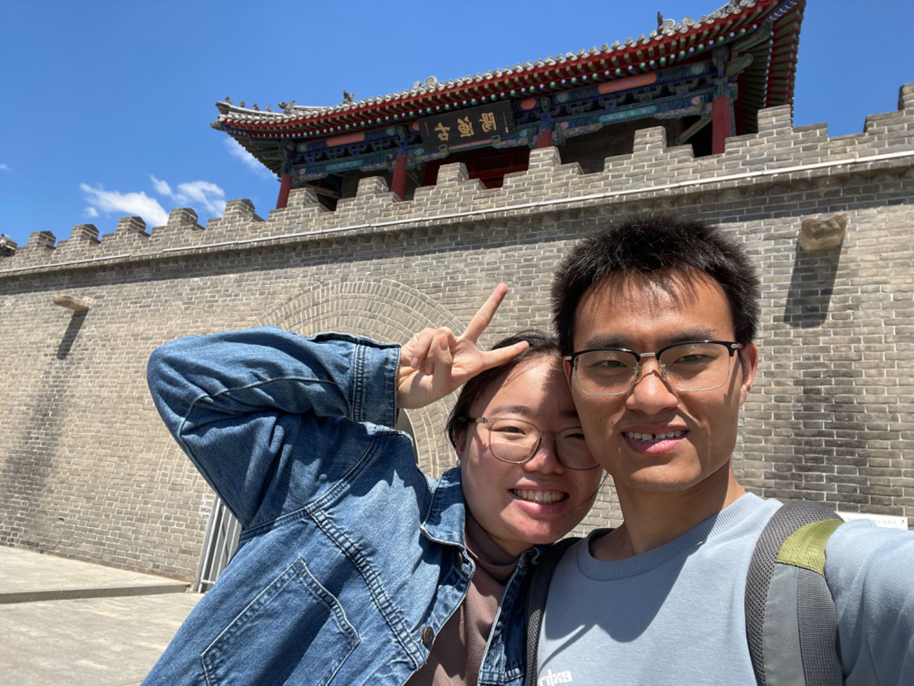

|
Li, Jingzheng (李京政)
|
 |
Jingzheng Li,
Ph.D student, Beihang University
37 Xueyuan Road, Haidian District, Beijing, China
E-mail: maxlijingzheng@163.com
|
About me
I am currently a Ph.D. student at Beihang University.
I focus on robust deep learning under distribution shift. My main research interests include Multimodal AI, Vision and Language, Transfer Learning, Self supervised/Semi-supervised/Weakly-supervised Learning.
Under Review
First author, "Target Structure Learning Framework for Unsupervised Multi-Class Domain Adaptation".
First author, "Towards Open-World Domain Adaptation via Iteratively Contrastive Learning and Clustering".
Vision and Language, Transfer learning
Jinzgheng Li, Hailong Sun, "LiFT: Transfer Learning in Vision-Language Models for Downstream Adaptation and Generalization", ACM MM-2023.
Jinzgheng Li, Hailong Sun, "NaCL: Noise-Robust Cross-Domain Contrastive Learning for Unsupervised Domain Adaptation", Machine Learning, 2023. [pdf][code]
Self supervised/Semi-supervised/Weakly-supervised Learning
Jinzgheng Li, Hailong Sun, "Correct Twice at Once: Learning to Correct Noisy Labels for Robust Deep Learning", ACM MM-2022. [pdf]
Jinzgheng Li, Hailong Sun, Jiyi Li, "Beyond Confusion Matrix: Learning from Multiple Annotators with Awareness of Instance Features", Machine Learning, 2022. [pdf]
Before 2019
Jinzgheng Li, Xibei Yang, Xiaoning Song, Jinhai Li, Pingxin Wang, Dong-Jun Yu, "Neighborhood attribute reduction: a multi-criterion approach", International journal of machine learning and cybernetics (IJLMC), 2019, pages:731-742.
Jinzgheng Li, Xiangjian Chen, Pingxin Wang, Xibei Yang, "Local view based cost-sensitive attribute reduction", Filomat , 2018, pages:1817-1822.
Shaochen Liang, Xibei Yang, Xiangjian Chen, Jingzheng Li, Jinzgheng Li, "Stable attribute reduction for neighborhood rough set", Filomat , 2018, pages:1809-1815.
Academic service
Reviewer
IEEE Transactions on Neural Networks and Learning Systems
ACM MM 2022 2023, AAAI2023, IJCAI 2022 2021, CIKM 2020
|